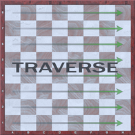
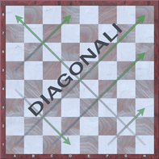

Impariamo a giocare a scacchi
Gli scacchi sono giocati da due avversari che si posizionano ai lati opposti di un tavoliere di 64 case con colori alternati. Ogni giocatore ha a disposizione 16 pezzi: 1 re, 1 donna, 2 torri, 2 alfieri, 2 cavalli ed 8 pedoni. L'obiettivo del gioco è quello di dare scacco matto al re avversario. Si ha lo scacco matto quando il re avversario viene messo nella condizione di essere inevitabilmente catturato (ovvero si trova “sotto scacco") ed in cui, anche muovendo, gli sarebbe comunque impossibile sfuggire alla cattura.
All’inizio della partita, la scacchiera viene disposta in modo che ogni giocatore abbia una casa bianca (o di colore chiaro) nell' angolo inferiore destro. I pezzi sono disposti sempre nello stesso ordine. La seconda riga orizzontale (o traversa) viene occupata dai pedoni. Sulla prima riga, invece, partendo dai due angoli opposti, vengono prima collocate le torri, seguite dai cavalli, dagli alfieri e infine, dalla donna, la quale occupa sempre una casa del proprio colore [donna bianca su casa bianca e donna nera su casa nera). Il Re viene posizionato nell'ultima casa rimasta libera. Il giocatore con i pezzi bianchi muove sempre per primo. Per questo motivo in genere i giocatori tirano a sorte per chi terrà il Bianco. A questo punto, il Bianco farà la sua mossa, seguita da quella de Nero: muoverà poi di nuovo il Bianco e poi ancora il Nero... e cosi via fino alia fine della partita.
La scacchiera ha la sua «geometria» di cui è bene conoscere la terminologia.
• Le colonne sono le otto file di case verticali rispetto ai due giocatori (indicate con le lettere minuscole da «a» ad «h»).
• Le traverse sono le otto file di case orizzontali (indicate con i numeri da 1 a 8).
• Le diagonali sono le file di case dello stesso colore che si toccano fra loro con gli angoli.
Sulla scacchiera, come vedremo, si sviluppano il movimento e l’attività dei pezzi. Per indicare con precisione ogni singola casa della scacchiera e il movimento di tutti i pezzi è stato da tempo adottato un sistema di notazione per cui ogni casa ha il proprio nome, che è formato dalle sue coordinate, cioè una lettera e un numero.